Yoghurt4C: When placed, taters will randomly do little jumps. If you're impatient, you can pet the tater to incentivize it into jumping.
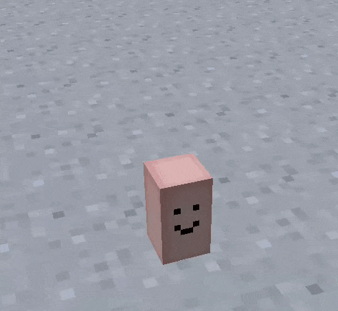
Yoghurt4C: Each tater has an inventory of 6 slots, each slot corresponding to one of the tater's sides.
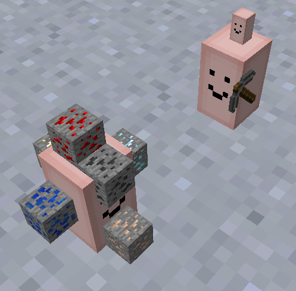
Yoghurt4C: Don't like the default look? Feel as though items don't give your tater enough personality? Just rename your tater to give it a fresh look!
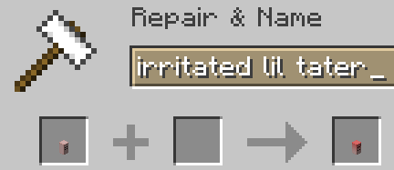
Yoghurt4C: There are 2 (actually 3) systems in place to help you choose the exact tater to suit your needs: Prefixes, Accessories and Models/Skins. I will go over the skins first.
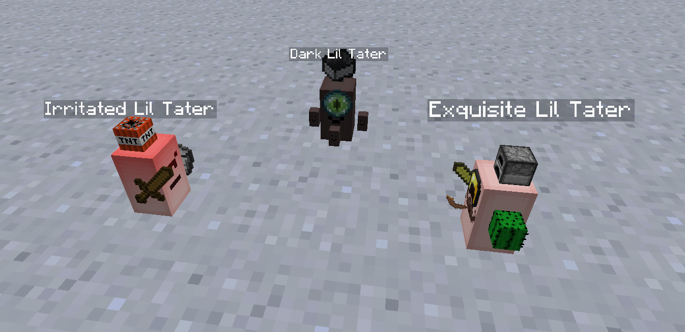
Yoghurt4C: Adding a custom skin can be as simple as going to assets/modid(ltr in this case)/powertaters/liltaterreoaded, adding a json file and putting a name<>texture name pair into the file. the texture should go in assets/modid/textures/tater. subfolders are supported, just add them to the texture filepath!
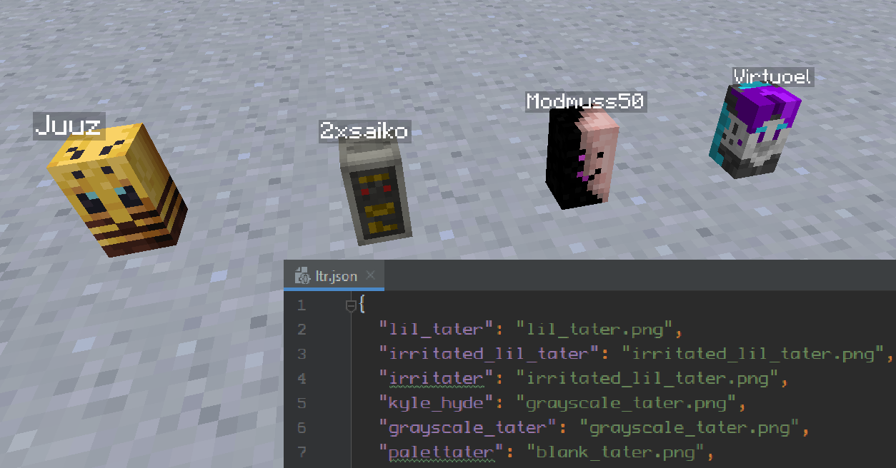
Yoghurt4C: Vanilla blockmodels are also supported. Just put them in assets/modid/models/tater/ and try it out in-game. If you name the tater the same as the blockmodel, it should appear automatically!
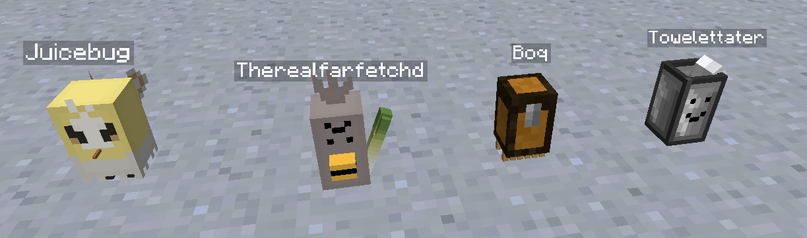
Yoghurt4C: Moving on to Prefixes, there are 2 separate types of them: hardcoded prefixes (mostly rendering changes) and accessories (which are additional blockmodels rendered on top of taters)
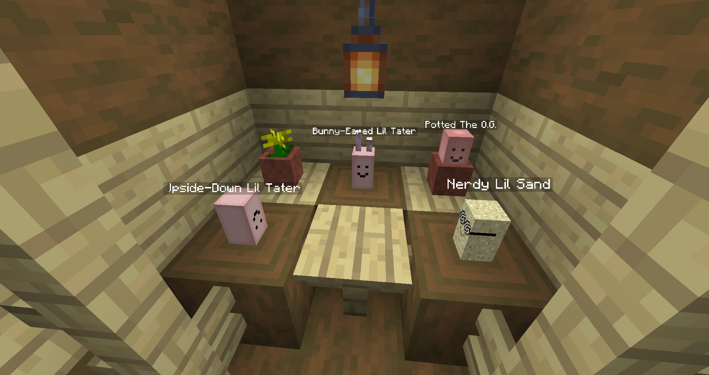
Yoghurt4C: A good example of a hardcoded prefix would be pehkui, which makes the tater smaller. So, a tater named 0.3 pehkui towelettater would look like this:
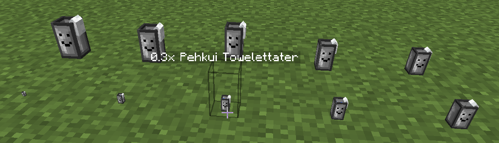
Yoghurt4C: there's quite a few of them, and I can't really describe or show all of them just like this... so I'll move on to accessories.
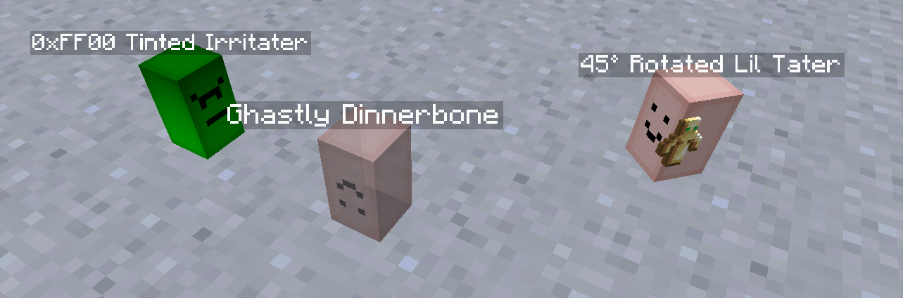
Yoghurt4C: accessories are loaded just like "base" tater models, but act as prefixes. putting your model in assets/modid/models/tater/accessories/ should do the trick.
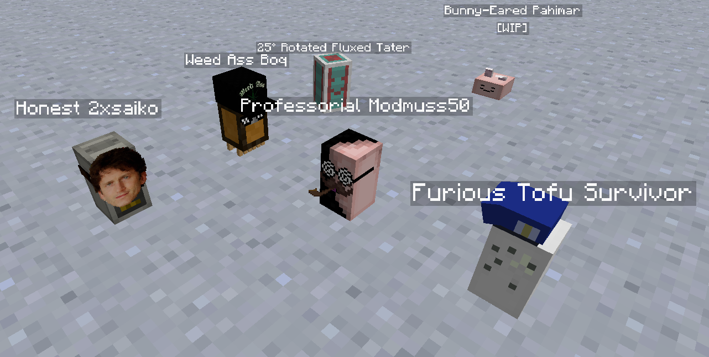
Yoghurt4C: there are some peculiar taters in the mix... for example, the Palettater dynamically changes its colour based on its held items. it defaults to HSV averaging, but you can change the averaging mode by using RGB or HSV as a prefix if you so choose.
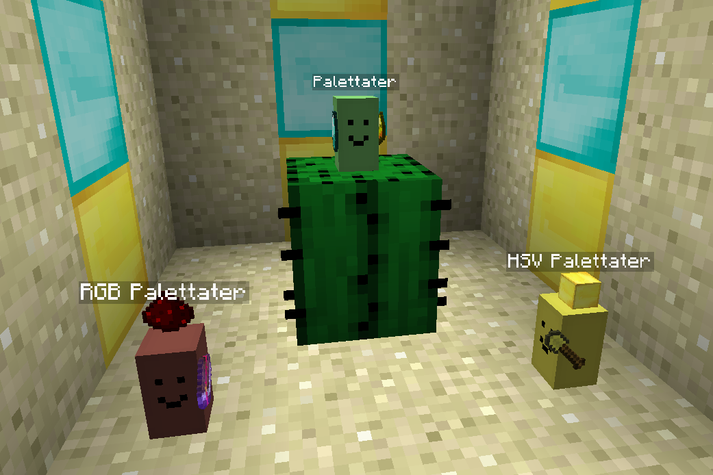
Yoghurt4C: There are also taters that constantly do things. In case you're wondering, vanilla models work just fine with animated texture mcmeta...
Yoghurt4C: the Imitater is especially adept at camouflage. when a valid blockitem is put into its top (literally) inventory slot, the imitater tries its hardest to assume the identity of said block
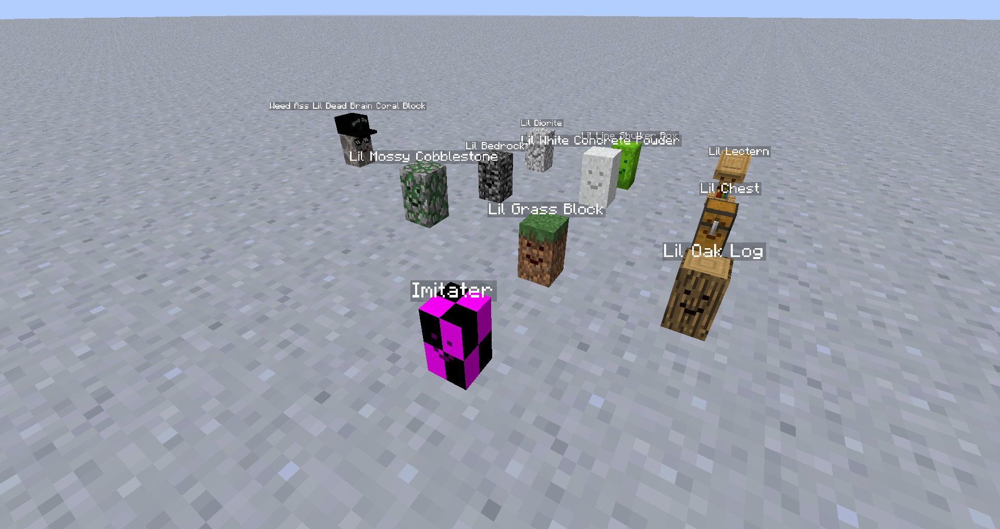
Yoghurt4C: when a tater is filled with other taters, interacting with it may result in unforeseen consequences.
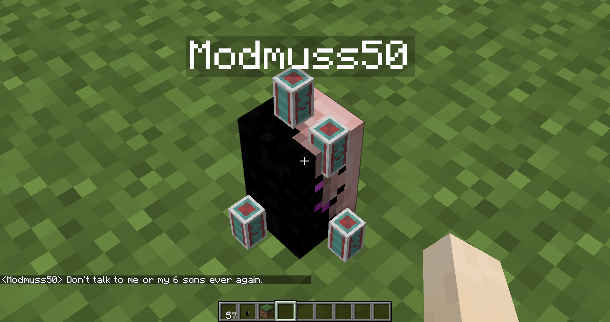
Yoghurt4C: sadly, this is all I can (legally) show you today, and I must take my leave.
on a completely unrelated note, I've heard that there exist legends of a specialized REI tab, which is filled with all taters currently present in the special tater atlases! personally, I've never seen it, and I'm not entirely sure those rumors can be trusted. perhaps you'll find out how to unlock this pool of knowledge?